情報処理 I － 第３回
１．画像・音声の取り込み
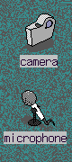
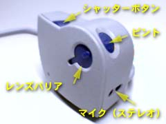
O2 というコンピュータは動画や音声、あるいは３次元グラフィックスなどの、
いわゆる“マルチメディアデータ”も、
わりと簡単に扱うことができます。
実は、この“簡単に扱える”ことを実現するために、
ハードウェア的にもソフトウェア的にも結構いろいろ工夫されているのですが、
それが一番分かりやすいのは、
本体にカメラが付いているところかも知れません
（機種によっては付いていないものもあります）。
では、このカメラを使って少し遊んでみましょう。
カメラのレンズの部分はレンズバリアという“ふた”がしてあります。
これをスライドさせて、レンズを出してください。
このカメラを使って画像や音声を取り込むには
mediarecorder というプログラムを使用します。
mediarecorder はデスクトップ上の
camera や microphone というアイコンをダブルクリックすれば起動します。
ここでは camera のアイコンをダブルクリックしてください。
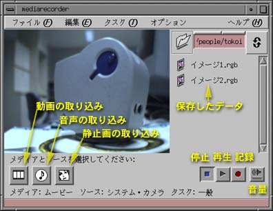
| mediarecorder が起動しないとき
|
|---|
|
時々、mediarecorder が起動しないことがあります。
この時はいったん O2 本体の電源を切ってから、
裏側のカメラのケーブルのコネクタを一度“ぎゅっ”と押し込んで、
（１５秒ほど待って）もう一度電源を入れてください。
|
静止画像の取り込み
では、最初に静止画像の取り込みを行ってみましょう。
- mediarecorder のウィンドウの左下の左から３つ目のボタン
（顔が描いてあるボタン）をクリックすると現れるポップアップメニューを、
“接続されているソースからのイメージ：O2 ビデオハードウェア”→
“システムカメラ”という順に選んでください。
- すると、
ウィンドウのサイズが大きくなると思います。
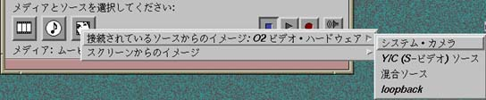
- では、最初に自画像を取り込んでみましょう。
カメラを自分に向けて、
この画面を見ながらカメラのフォーカスダイアルを動かして、
ピントを合わせてください。
- ピントがあったらカメラのシャッターボタンを押すか、
mediarecorder の記録ボタンをクリックしてください。
- しばらくすると、mediarecorder のウィンドウに
“イメージ<数字>.rgb”という表示が現れると思います。
これが今取り込んだ画像のデータファイル名です。
- そのほか、適当に好きなものを何件か取り込んでみてください。
再生
取り込んだデータが保存されているデータファイルの一覧が
mediarecorder のウィンドウに表示されていると思います。
このうちどれか一つをクリックしてください。
ファイル名の左のアイコンが黄色くなると思います。
これが、そのアイコンを“選択した”状態です。
そのあと、mediarecorder の“再生”ボタンをクリックしてください。
さっき取り込んだ画像が表示されたでしょうか？
音声の取り込み
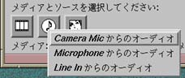
デスクトップ上の microphone のアイコンをダブルクリックするか、
medhiarecorder のウィンドウの左下の左から２つ目のボタン
（音符が描いてあるボタン）をクリックすると現れるポップアップメニューの
“Camera Mic からのオーディオ”を選択すると、
下のようなウィンドウが現れます。
このグラフは入力音声のレベルを示します。
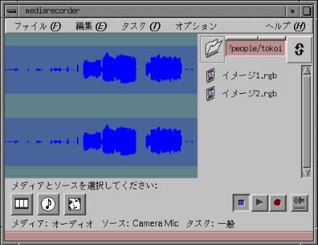
では、音声を取り込んでみましょう。
- カメラのシャッターボタンを押すか、
mediarecorder の“記録”のボタンをクリックすると、
録音が開始されます。
- カメラのマイクの部分に向かって、
何か話してください。
そのとき、mediarecorder のウィンドウのレベル表示が、
その範囲いっぱいに表示されるよう声の大きさや
口とマイクの距離を調整してみてください。
- 数秒話したらもう一度カメラのシャッターボタンを押すか、
mediarecorder の“記録”のボタンをクリックしてください。
これで録音完了です。
- 保存されたデータファイルを再生してみましょう。
決して録音したまま放置しないでください。
とても大きなデータファイルを作ってしまいます。
動画像の取り込み
動画像を取り込みは音声の取り込みに準じています。
mediarecorder のウィンドウの左下の左から１つ目のボタン
（フィルムが描いてあるボタン）をクリックすると現れるポップアップメニューを、
“接続されているソースからのムービー：O2 ビデオハードウェア”→
“システムカメラ”という順に選んでください。
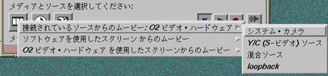
このあと、カメラのシャッターボタンを一度押すか、
mediarecorder の“記録”ボタンをクリックすると、
もう一度カメラのシャッターボタンを一度押すか、
mediarecorder の“記録”ボタンをクリックするまでの間、
カメラの画像が録画されます。
決して録画したまま放置しないでください。
データファイルを作ってしまいます。
手持ちのビデオカメラで撮影した画像を取り込みたいときは、
そのビデオカメラを O2 の本体の横の入力端子 (IN) に、
ビデオ用のケーブルを使ってつないでください。
その際、S 端子で接続したときは“Y/C (Sビデオ) ソース”、
RCA ピンジャックで接続したときは“混合ソース”を選んでください。
| 動画像が録画できないとき
|
|---|
|
おそらく、現時点では動画像の録画を行おうとすると、
録画終了時にエラーメッセージが出て、
ファイルが保存されないと思います。
これはみなさんのホームディレクトリが、
実際にはサーバと呼ばれるほかのコンピュータにあって、
みなさんが今使っているコンピュータからは
ネットワークを経由してアクセスしていることに起因しています
（これは将来改善されるかも知れません）。
もしどうしても動画像（ビデオ）の録画（キャプチャ）を行いたいときは、
以下のような手順で
mediarecorder が使用するスクラッチファイルのディレクトリを
/tmp に変更してください。
mediarecorder のメニューバーの“オプション”から、
“スクラッチディスクの設定”を選んでください。
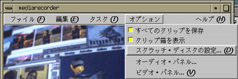
“新しいスクラッチ・ディレクトリ”に /tmp とタイプした後、
“追加”のボタンをクリックしてください。
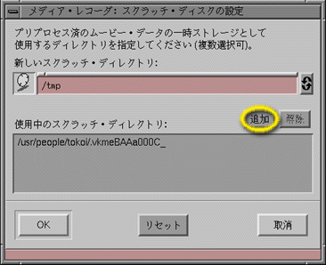
“使用中のスクラッチ・ディレクトリ”の /usr/people/...
で始まる方をマウスでクリックして選択し、
その後“解除”のボタンをクリックしてください。
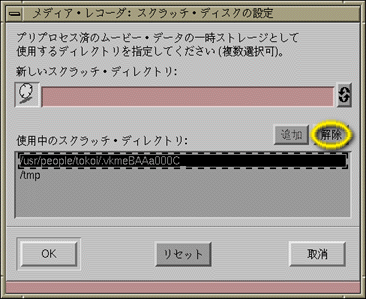
最後に "OK" のボタンをクリックして、
“スクラッチ・ディスクの設定”のウィンドウを閉じてください。
|
２．作図
O2 のオペレーティングシステム IRIX には、
showcase というソフトウェアがおまけとして付いてきます。
おまけと言っても結構（というか、かなり）高機能で、
使いこなせればそれなりに便利です。
今度はこれを使って簡単な作図をします。
アイコンカタログのウィンドウの中の
"Applications" のタブをクリックしてください。
その中のシルクハットが引っくり返ったようなアイコンが showcase です。
これをダブルクリックしてください。
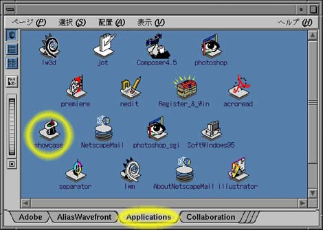
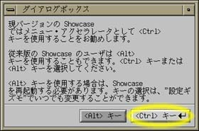
showcase を起動すると、
４つのウィンドウが開くと思います。
このうち一つ（右図）は初めて showcase を起動したときだけ表示されます。
これは“ キー”のボタンをクリックして消してください。
このほかにメインの“作図ウィンドウ”、
主要な作図メニューを集めた“マスターギズモ”、
利用者に対するメッセージ等を表示する“ステータスギズモ”という
３つのウィンドウが開かれていると思います。
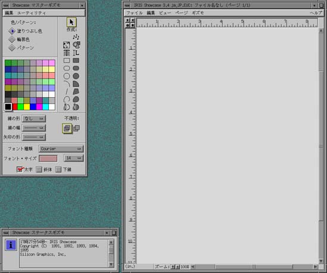
マスターギズモの右側の部分が、
作図に用いる基本図形です。
ここで図形を選択し、
作図ウィンドウでマウスをドラッグすることで、
図形を描くことができます。
多分、使い方はそれほど難しくないと思うので、
ここではポイントだけ説明します。
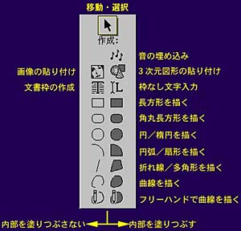
図形の編集
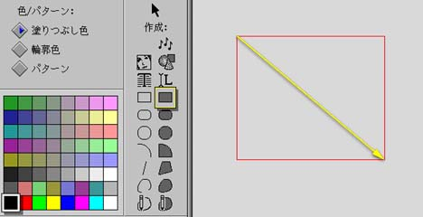
長方形を描くには、
長方形を選択したあと、
対角線をドラッグします。
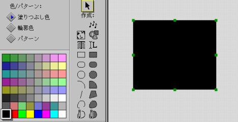
描いた直後の図形は、
選択されている状態（周囲に小さな緑色の“ハンドル”が付いている）
になっています。
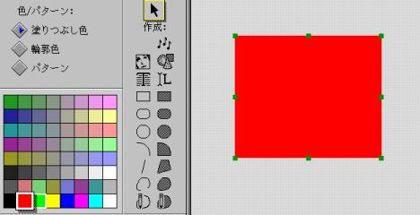
選択されている図形の色を変更するには、
単にパレットのその色をクリックするだけです。
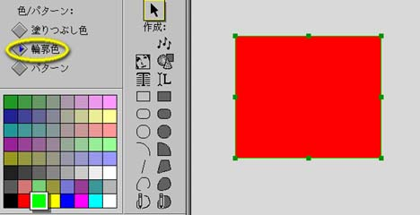
この図形に輪郭線がありませんから、
輪郭線が付くように変更してから、
輪郭線の色を変更します。
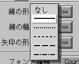
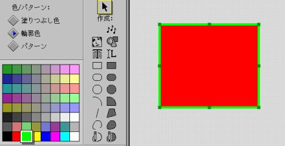
輪郭線の幅を変更します。
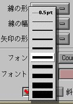
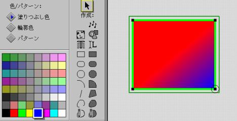
図形をダブルクリックすると、
図形の回りに枠が現れ、
図形の頂点のところに黒いハンドルが現れます。
このハンドルを指定して頂点単位に色を割り当てることもできます。
ただ、この方法でグラデーションを制御するには、
多少の慣れが必要です。
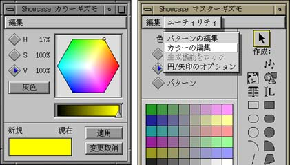
マスターギズモのパレットに必要な色がないときは、
マスターギズモの“ユーティリティ”メニューから“カラーの編集”を選んで、
カラーギズモを表示させてください。
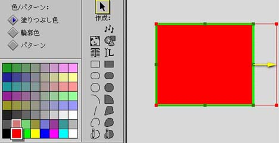
図形のサイズを変更するには、
ハンドルをドラッグします。
辺の中央のハンドルの動きは、
水平または垂直方向の拘束を受けます。
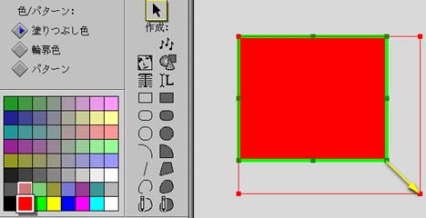
コーナーのハンドルは自由に動けます。
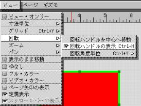
図形を回転させるときは、
先に回転ハンドルを表示させます。
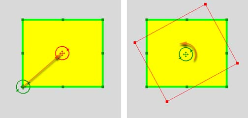
回転ハンドルの中心をドラッグして回転の中心に移動し、
その周囲をドラッグして図形を回転させます。
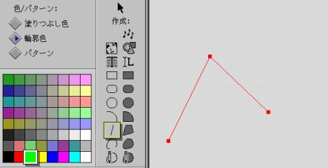
折れ線や曲線では、
マウスの左ボタンをクリックする度に、
頂点や制御点が追加されます。
終点ではマウスの中央ボタンをクリックしてください。
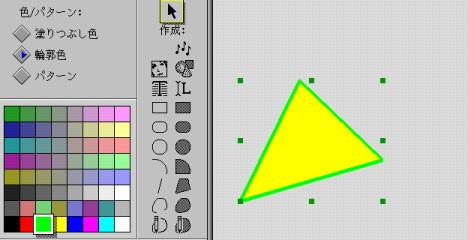
折れ線や曲線でも、
マスターギズモの“編集”メニューから“塗りつぶす”を選べば、
多角形や閉じた曲線に直すことができます。
もちろんこの逆も可能です。
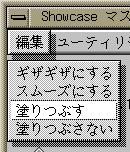
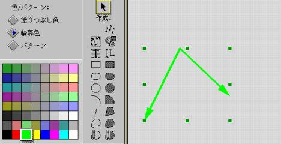
折れ線や曲線も矢印にできます。
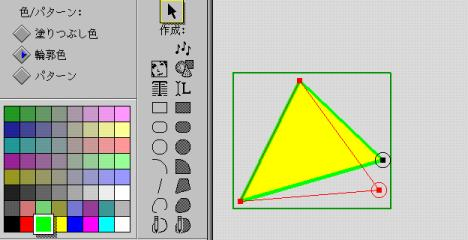
図形をダブルクリックして現れる黒いハンドルをドラッグすれば、
頂点の位置を修正できます。
また辺の途中をクリックすれば、頂点を追加できます。
選択した頂点を削除するには、Backspace キーをタイプします。
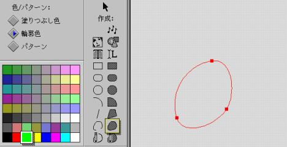
閉じた曲線も折れ線と同様に最後の点の位置はマウスの中央ボタンで指定します。
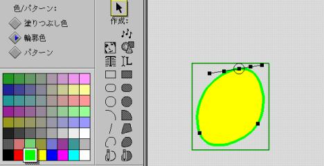
曲線をダブルクリックすると、
制御点のほかに、
制御点における接線上に４個のハンドルが現れます。
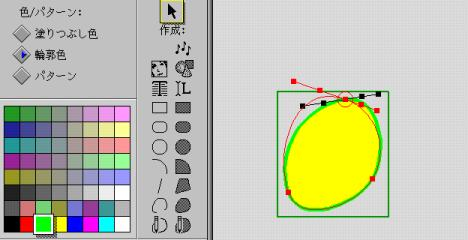
外側の２つのハンドルは、
制御点における接線ベクトルを制御します。
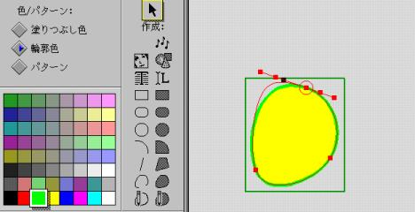
内側の２つのハンドルは、
この接線上を移動し、
曲線の制御点付近における“テンション”を制御します。
図形のコピー／削除
図形のコピーや削除は、
作図ウィンドウのメニューバーの“編集”メニューを使って行います。
図形をコピーするときは、
図形を選択（その図形をマウスでクリックしてハンドルを表示させる）し、
“コピー”を選んだあと“ペースト”を選んでください。
一度“ペースト”したあと“複写でペースト”を選ぶと、
同じ図形を等間隔に配置することができます。

画像の貼り付け
マスターギズモの“顔”のボタンをクリックすると、
“ファイル選択”のウィンドウが現れます。
このウインドウが開いた直後は、
オペレーティングシステムに添付されている画像のディレクトリが開いているので、
“オリジナル”のボタンをクリックして、
ホームディレクトリに戻ってください。
すると、先ほど mediarecorder で作成した
画像のデータファイルが見つかると思います。
もし見つからなければ、
ファイル名の一覧の右側にあるスクロールバーをドラッグして探してみてください。
貼り付けたいファイルが見つかったら、
それをクリックしてください。
すると“挿入するイメージ・ファイル”の欄に
そのファイル名が入ります。
その後“了解”のボタンをクリックしてください。
メインの“作図ウィンドウ"にマウスカーソルを移動すると、
これから張り込もうとする画像の枠があらわれるはずです。
画像を貼り付けようと思う場所で、
マウスをクリックしてください。
なお、音の貼り付け（音符のボタン）も同様です。
日本語文字の入力
文字の入力において日本語を使いたいときは、
“マスターギズモ”の“フォントの種類”で
"Mincho" か "Gothic" を選んでください。
これら以外のフォント（字体）では、
日本語は扱えません。
日本語の入力は Netscape の時と同様、
Ctrl-\ をタイプしてローマ字で文章を入力したあと、
Ctrl-W で変換します。
なお、デスクトップの左下隅にある Wnn6 のアイコンをクリックすれば、
このキーバインディング（キーボードの設定）を変更できます。
課題
自分を宣伝する「チラシ」を描け。

印刷する場合、用紙サイズは A4 にしておく必要があります。
“作図ウィンドウ”の“ページ”のメニューから、
“ページギズモ”を選んでください。
開いたウインドウの中の“ページサイズ”のポップアップメニューから、
“メートル法”→“A4 - 縦”を選んでください。